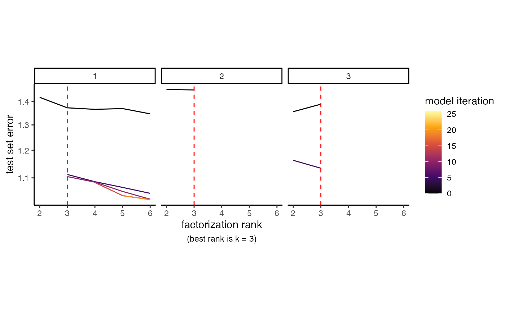
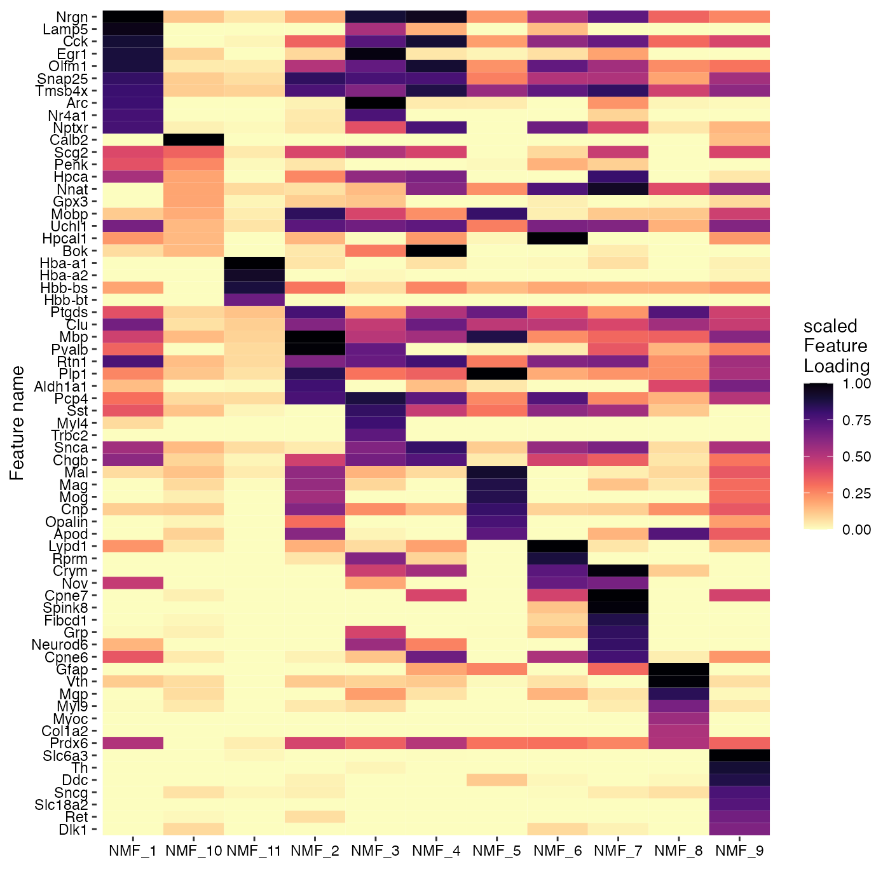
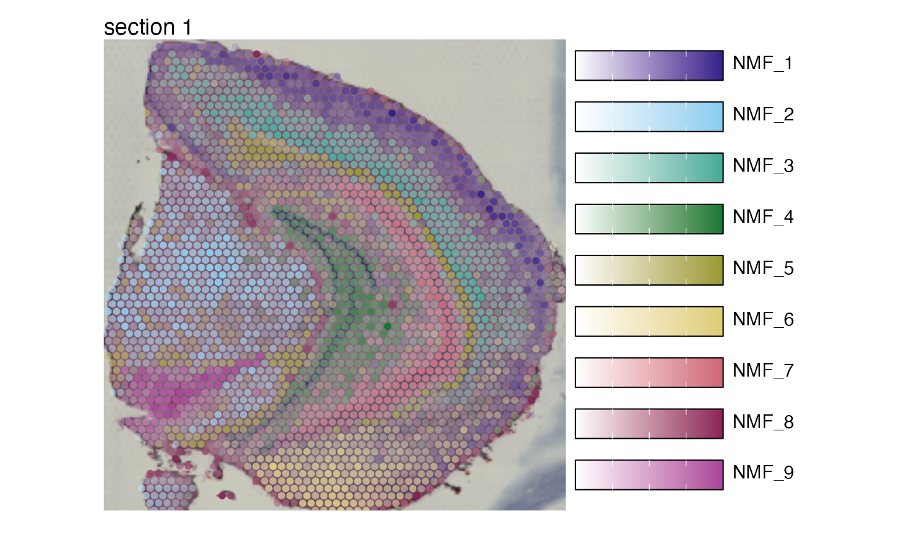
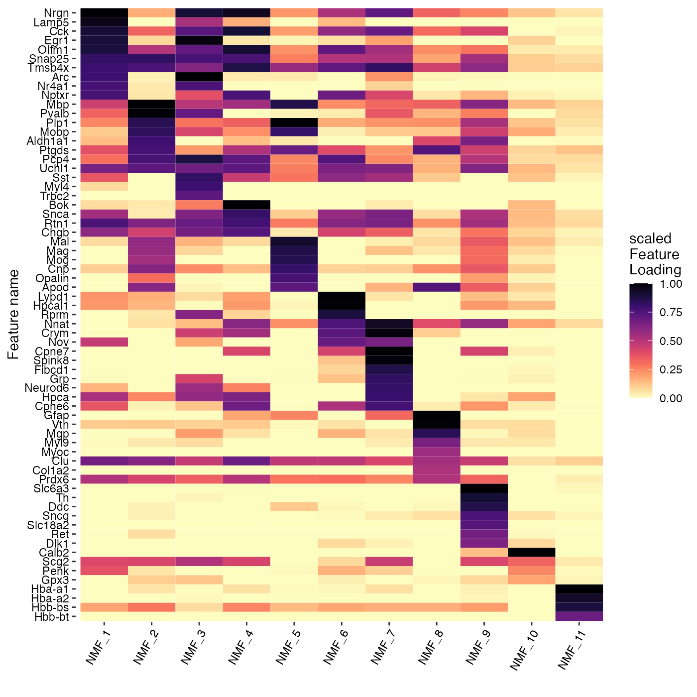

Non-negative matrix factorization
Last compiled: 13 February 2023
NNMF.RmdNon-negative matrix factorization (NNMF or NMF) can be a useful
technique to deconvolve 10x Visium data, in particular when a reference
single-cell RNA-seq data is not available to conduct cell type
deconvolution. In this vignette we will demonstrate how you can apply
this method with semla on spatial data.
We recommend using the singlet R package for
NNMF which handles Seurat objects. singlet
uses the ultra fast NNMF implementation from RcppML. Both of these
packages are developed by Zach DeBruines lab and you can find more
information about their work and tools at https://github.com/zdebruine and at https://www.zachdebruine.com/.
RcppML is available on CRAN
and GitHub, and
singlet can be installed from GitHub with
devtools::install_github("zdebruine/singlet").
We’ll use our mouse brain test data for the NNMF. The method automatically runs cross-validation to find the best rank and to learn a model at that rank.
NB: The mouse brain test data only includes a subset of the entire data of 188 unique genes. With the full dataset, we would be able to find a higher optimal rank and therefore obtain more factors.
se_mbrain <- readRDS(system.file("extdata/mousebrain",
"se_mbrain",
package = "semla"))
# Set seed for reproducibility
set.seed(42)
se_mbrain <- RunNMF(se_mbrain)## running with sparse optimization
##
## REPLICATE 1 / 3
## k = 2 , rep = 1
## test_error = 1.4626e+00
## not overfit
## best rank in replicate = 2
##
## k = 3 , rep = 1
## test_error = 1.1130e+00
## not overfit
## best rank in replicate = 3
##
## k = 6 , rep = 1
## test_error = 1.0116e+00
## not overfit
## best rank in replicate = 6
##
## k = 11 , rep = 1
## test_error = 9.6053e-01
## overfit (overfit_score = 2.4498e-04 )
## best rank in replicate = 6
##
## k = 8 , rep = 1
## test_error = 9.7487e-01
## not overfit
## best rank in replicate = 8
##
## k = 9 , rep = 1
## test_error = 9.6914e-01
## not overfit
## best rank in replicate = 9
##
## k = 10 , rep = 1
## test_error = 9.6743e-01
## not overfit
## best rank in replicate = 10
##
##
## REPLICATE 2 / 3
## k = 2 , rep = 2
## test_error = 1.4324e+00
## not overfit
## best rank in replicate = 2
##
## k = 3 , rep = 2
## test_error = 1.1140e+00
## not overfit
## best rank in replicate = 3
##
## k = 6 , rep = 2
## test_error = 9.9703e-01
## not overfit
## best rank in replicate = 6
##
## k = 11 , rep = 2
## test_error = 9.5834e-01
## overfit (overfit_score = 1.5347e-03 )
## best rank in replicate = 6
##
## k = 8 , rep = 2
## test_error = 9.6048e-01
## not overfit
## best rank in replicate = 8
##
## k = 9 , rep = 2
## test_error = 9.6746e-01
## not overfit
## best rank in replicate = 8
##
## k = 7 , rep = 2
## test_error = 9.7535e-01
## not overfit
## best rank in replicate = 8
##
##
## REPLICATE 3 / 3
## k = 2 , rep = 3
## test_error = 1.4391e+00
## not overfit
## best rank in replicate = 2
##
## k = 3 , rep = 3
## test_error = 1.1060e+00
## not overfit
## best rank in replicate = 3
##
## k = 6 , rep = 3
## test_error = 1.0093e+00
## not overfit
## best rank in replicate = 6
##
## k = 11 , rep = 3
## test_error = 9.7064e-01
## overfit (overfit_score = 2.9483e-03 )
## best rank in replicate = 6
##
## k = 8 , rep = 3
## test_error = 9.9007e-01
## overfit (overfit_score = 5.3016e-04 )
## best rank in replicate = 6
##
## k = 5 , rep = 3
## test_error = 1.0257e+00
## not overfit
## best rank in replicate = 6
##
## k = 7 , rep = 3
## test_error = 9.8727e-01
## not overfit
## best rank in replicate = 7
##
##
## Unmasking test set
## Fitting final model at k = 11
k <- ncol(se_mbrain@reductions$nmf@feature.loadings)We can plot the cross-validation results and find that the optimal rank decided by the method is 11 which determines the number of factors we obtain from the NMF run.
RankPlot(se_mbrain)
The results are stored as a DimReduc object in our
Seurat object and we can map the factors spatially with
MapFeatures().
MapFeatures(se_mbrain,
features = paste0("NMF_", 1:k),
override_plot_dims = TRUE,
colors = viridis::magma(n = 11, direction = -1)) &
theme(plot.title = element_blank())
We can also investigate the gene loadings for each factor with
PlotFeatureLoadings() which will give us an idea about what
the top contributing genes for each factor are. Below we can see the top
30 contributing genes for NMF_1 and NMF_2.
PlotFeatureLoadings(se_mbrain,
dims = 1:2,
reduction = "nmf",
nfeatures = 30,
mode = "dotplot",
fill = "darkmagenta",
pt_size = 3)
We can also map multiple factors spatially in a single plot with
MapMultipleFeatures():
se_mbrain <- LoadImages(se_mbrain)## ## ── Loading H&E images ──## ## ℹ Loading image from /Users/ludviglarsson/miniconda3/envs/R4.2/lib/R/library/semla/extdata/mousebrain/spatial/tissue_hires_image.jpg## ℹ Scaled image from 2000x1882 to 400x376 pixels## ℹ Saving loaded H&E images as 'rasters' in Seurat object
factor_colors <- c("#332288", "#88CCEE", "#44AA99", "#117733",
"#999933", "#DDCC77", "#CC6677", "#882255", "#AA4499")
n_k_plot <- ifelse(k<9, k, 9)
MapMultipleFeatures(se_mbrain,
features = paste0("NMF_", 1:n_k_plot),
colors = factor_colors[1:n_k_plot],
image_use = "raw",
override_plot_dims = TRUE,
pt_size = 2)## Loading required namespace: ggnewscale
Similarly, we can also summarize the top feature loadings for each factor with a heatmap:
PlotFeatureLoadings(se_mbrain,
dims = 1:k,
reduction = "nmf",
nfeatures = 10,
mode = "heatmap",
gradient_colors = viridis::magma(n = 11, direction = -1))
NB: Although we are able to pick up distinct patterns in our data with the factor analysis, our mouse brain dataset only contain a fraction of the full dataset which partly explains why the spatial maps and gene loadings for some factors are noisy.
Package versions
semla: 0.1.0RcppML: 0.3.7singlet: 0.99.1023
Session info
## R version 4.2.1 (2022-06-23)
## Platform: x86_64-apple-darwin13.4.0 (64-bit)
## Running under: macOS Big Sur ... 10.16
##
## Matrix products: default
## BLAS/LAPACK: /Users/ludviglarsson/miniconda3/envs/R4.2/lib/libopenblasp-r0.3.21.dylib
##
## locale:
## [1] en_US.UTF-8/en_US.UTF-8/en_US.UTF-8/C/en_US.UTF-8/en_US.UTF-8
##
## attached base packages:
## [1] stats graphics grDevices utils datasets methods base
##
## other attached packages:
## [1] singlet_0.99.1023 semla_0.1.0 ggplot2_3.3.6 dplyr_1.0.9
## [5] SeuratObject_4.1.3 Seurat_4.3.0
##
## loaded via a namespace (and not attached):
## [1] fastmatch_1.1-3 systemfonts_1.0.4 plyr_1.8.7
## [4] igraph_1.3.4 lazyeval_0.2.2 sp_1.5-1
## [7] splines_4.2.1 BiocParallel_1.30.3 listenv_0.8.0
## [10] scattermore_0.8 digest_0.6.29 htmltools_0.5.4
## [13] viridis_0.6.2 magick_2.7.3 fansi_1.0.3
## [16] magrittr_2.0.3 memoise_2.0.1 tensor_1.5
## [19] cluster_2.1.4 ROCR_1.0-11 limma_3.52.3
## [22] globals_0.16.0 matrixStats_0.62.0 RcppML_0.3.7
## [25] pkgdown_2.0.6 spatstat.sparse_3.0-0 colorspace_2.0-3
## [28] ggrepel_0.9.1 textshaping_0.3.6 xfun_0.32
## [31] jsonlite_1.8.3 progressr_0.10.1 spatstat.data_3.0-0
## [34] zeallot_0.1.0 survival_3.4-0 zoo_1.8-10
## [37] glue_1.6.2 polyclip_1.10-0 gtable_0.3.0
## [40] leiden_0.4.2 future.apply_1.9.0 msigdbr_7.5.1
## [43] abind_1.4-5 scales_1.2.1 DBI_1.1.3
## [46] spatstat.random_3.0-1 miniUI_0.1.1.1 Rcpp_1.0.9
## [49] viridisLite_0.4.1 xtable_1.8-4 reticulate_1.26
## [52] htmlwidgets_1.5.4 httr_1.4.4 fgsea_1.22.0
## [55] RColorBrewer_1.1-3 ellipsis_0.3.2 ica_1.0-3
## [58] farver_2.1.1 pkgconfig_2.0.3 sass_0.4.2
## [61] uwot_0.1.14 deldir_1.0-6 utf8_1.2.2
## [64] labeling_0.4.2 tidyselect_1.1.2 rlang_1.0.6
## [67] reshape2_1.4.4 later_1.3.0 munsell_0.5.0
## [70] tools_4.2.1 cachem_1.0.6 cli_3.4.1
## [73] dbscan_1.1-10 generics_0.1.3 ggridges_0.5.3
## [76] evaluate_0.16 stringr_1.4.1 fastmap_1.1.0
## [79] yaml_2.3.5 ragg_1.2.2 goftest_1.2-3
## [82] babelgene_22.9 knitr_1.39 fs_1.5.2
## [85] fitdistrplus_1.1-8 purrr_0.3.4 RANN_2.6.1
## [88] pbapply_1.5-0 future_1.27.0 nlme_3.1-159
## [91] mime_0.12 compiler_4.2.1 rstudioapi_0.14
## [94] plotly_4.10.0 png_0.1-7 spatstat.utils_3.0-1
## [97] tibble_3.1.8 bslib_0.4.0 stringi_1.7.8
## [100] highr_0.9 desc_1.4.1 forcats_0.5.2
## [103] lattice_0.20-45 Matrix_1.5-3 shinyjs_2.1.0
## [106] vctrs_0.5.1 pillar_1.8.1 lifecycle_1.0.3
## [109] spatstat.geom_3.0-3 lmtest_0.9-40 jquerylib_0.1.4
## [112] RcppAnnoy_0.0.19 data.table_1.14.2 cowplot_1.1.1
## [115] irlba_2.3.5 httpuv_1.6.5 patchwork_1.1.2
## [118] R6_2.5.1 promises_1.2.0.1 KernSmooth_2.23-20
## [121] gridExtra_2.3 parallelly_1.32.1 codetools_0.2-18
## [124] MASS_7.3-58.1 assertthat_0.2.1 rprojroot_2.0.3
## [127] withr_2.5.0 sctransform_0.3.5 parallel_4.2.1
## [130] grid_4.2.1 tidyr_1.2.0 rmarkdown_2.15
## [133] Rtsne_0.16 ggnewscale_0.4.8 spatstat.explore_3.0-5
## [136] shiny_1.7.4